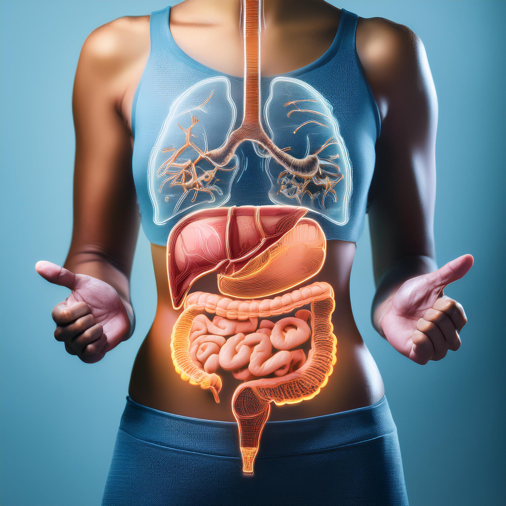
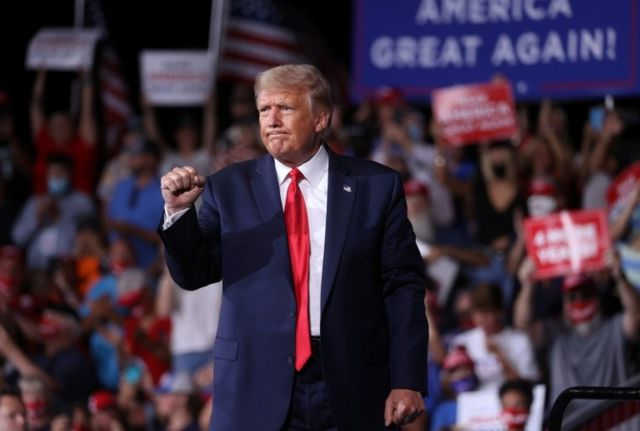

Saúde🧠
O Eixo Intestino-Cérebro e Sua Relação com a Saúde Mental
A conexão entre o intestino e o cérebro é um campo de estudo que tem ganhado destaque na ciência moderna, revelando impactos significativos na saúde mental. O eixo intestino-cérebro representa uma complexa via de comunicação bidirecional que interliga o sistema nervoso central, que controla o cérebro e a medula espinhal, ao sistema nervoso entérico, responsável pelas funções do trato gastrointestinal.
Esta interconexão permite que o cérebro e o intestino influenciem mutuamente suas funções. Através de um extenso conjunto de nervos, neurotransmissores e mensageiros químicos, eles operam como uma rede de comunicação, onde o intestino não apenas responde aos sinais cerebrais, mas também envia suas próprias mensagens ao cérebro. Neurotransmissores como a serotonina e o GABA (ácido gama-aminobutírico) são exemplos de como o intestino pode afetar o humor, o comportamento e a resposta ao estresse.
Um elemento crucial nessa comunicação é a microbiota intestinal, anteriormente conhecida como flora intestinal. Esta comunidade de microrganismos, principalmente bactérias, presente em tecidos saudáveis, exerce uma influência direta na função cerebral e na saúde emocional. A alimentação desempenha um papel vital na regulação da microbiota, como destacado no documentário “Os Segredos da Alimentação” (2024), disponível na Netflix. Os pesquisadores enfatizam que a compreensão da saúde intestinal é essencial para adaptar dietas individuais, sugerindo que a eficácia de medicamentos, suplementos e vitaminas é limitada sem considerar a saúde da microbiota.
Para aprofundar o entendimento sobre a relação entre a microbiota intestinal e o cérebro, bem como explorar práticas alimentares benéficas para a saúde mental, o episódio #120 do podcast "Ciência ao Pé do Ouvido" entrevistou Glauber Pimentel Florêncio, pesquisador no Programa de Pós-Graduação em Ciências da Saúde da Universidade Federal de Uberlândia (UFU). O episódio está disponível nas principais plataformas de podcast e também no portal Comunica UFU.
Economia💰
Elevação Tarifária Sob Bandeira Vermelha: O Que Esperar na Sua Próxima Fatura de Energia
Já não basta o calor...🥵
A recente decisão da Agência Nacional de Energia Elétrica (ANEEL) de acionar a bandeira vermelha patamar 2 gerou um impacto significativo nas contas de luz dos consumidores brasileiros, com um aumento que pode variar entre 10% e 13%. Este acréscimo na tarifa é uma resposta direta ao baixo nível dos reservatórios das hidrelétricas e à subsequente necessidade de ativar mais usinas termelétricas, que possuem um custo de geração de energia superior.
A bandeira vermelha patamar 2 é o nível mais alto na escala de alerta, que começa no verde, passa pelo amarelo, vermelho 1 e culmina no vermelho 2. A mudança para o nível mais alto foi uma surpresa, pois a ANEEL alterou a bandeira de verde diretamente para vermelho 2, sinalizando aos consumidores a necessidade urgente de redução no consumo de energia.
Com essa medida, espera-se um acréscimo de R$ 7,877 a cada 100 quilowatts-hora (kWh) consumidos, o que pode levar a inflação anual a superar o teto da meta estabelecida pelo Banco Central, que é de 4,5%, com um centro de meta de 3% e um piso de 1,5%. Até julho, a inflação acumulada nos últimos 12 meses já havia atingido o teto da meta, e as projeções para o Índice Nacional de Preços ao Consumidor Amplo (IPCA) de 2024 aumentaram pela sétima semana consecutiva, indicando uma tendência de alta que ainda não considerava o efeito da bandeira vermelha.
Especialistas da área econômica, como Homero Guizzo da Terra Investimentos e Mateus Cavaliere da PSR Consultoria, estimam que o impacto direto no IPCA deste mês será significativo, com previsões de aumento em torno de 13% no preço da energia em setembro, o que poderia adicionar mais 0,52 ponto percentual ao IPCA do mês, fechando em torno de 0,72%.
Este cenário desafia as metas inflacionárias e coloca em evidência a importância de políticas de gestão energética e de consumo consciente por parte dos brasileiros. A situação atual reflete a complexidade da matriz energética do país e a sensibilidade da economia a variações no setor energético, reforçando a necessidade de diversificação das fontes de energia e de investimentos em eficiência e sustentabilidade.
Política🗳
Cenário Político nos EUA: Harris Contra Trump - A Disputa Continua
As eleições presidenciais dos Estados Unidos estão se aproximando, e as pesquisas de intenção de voto começam a desenhar um cenário competitivo entre os principais candidatos. A vice-presidente Kamala Harris, representando o Partido Democrata, tem mostrado uma liderança frente ao ex-presidente Donald Trump, candidato pelo Partido Republicano, em duas pesquisas recentes.
De acordo com a pesquisa realizada pelo Outward Intelligence, Harris detém 52,6% do apoio contra 47,4% de Trump em um cenário de apenas dois competidores. Em um contexto que inclui candidatos independentes, Harris lidera com 49,5% contra 44,3% de Trump. Esses números indicam uma ligeira vantagem para Harris, que na semana anterior apresentava 48% das intenções de voto contra 43% de Trump, considerando outros candidatos na disputa.
Um outro levantamento, realizado pela InsiderAdvantage em quatro estados-chave dos EUA, revelou uma liderança de Trump por um ponto percentual nos estados do Arizona, Nevada e Carolina do Norte, enquanto na Geórgia, Harris e Trump aparecem empatados com 48%. Estes estados são particularmente importantes por serem considerados swing states, ou seja, estados que não têm um partido tradicionalmente vencedor e que podem definir o resultado da eleição.
As pesquisas da Morning Consult para a Bloomberg News também refletem a liderança de Harris sobre Trump entre os eleitores registrados em estados como Geórgia, Michigan, Nevada, Carolina do Norte, Pensilvânia e Wisconsin, enquanto os dois candidatos estão empatados no Arizona. Além disso, os eleitores dos estados indecisos que apoiam Harris estão agora 15 pontos percentuais mais propensos a votar em um candidato democrata do que aqueles que apoiaram o presidente Joe Biden na sondagem de abril, mostrando uma mudança significativa no eleitorado.
Esses dados são cruciais para entender o dinamismo da política americana e as tendências que podem surgir até o dia da eleição. Com margens de erro variando entre 2,1 e 3,7 pontos percentuais, as pesquisas indicam que a corrida presidencial pode ter reviravoltas até o último momento. Os candidatos continuam suas campanhas, buscando conquistar o apoio dos eleitores indecisos e solidificar suas bases eleitorais.
A análise dessas pesquisas é fundamental para os estrategistas de campanha e para o público em geral, que acompanha atentamente cada movimento dos candidatos. À medida que a data da eleição se aproxima, todos os olhos estarão voltados para os resultados das próximas pesquisas e para os debates que certamente influenciarão a decisão final dos eleitores americanos.
Extra✨
Segunda-feira à noite é o momento perfeito para se preparar para o restante da semana. Aqui estão algumas sugestões para aproveitar sua noite:
- Avalie e planeje a semana 📅: Reflita sobre suas tarefas e metas para a semana e planeje seus próximos passos para manter o foco e a produtividade.
- Mantenha o autocuidado em alta 🧖♀️: Dedique-se ao autocuidado, seja com uma prática de meditação, um banho relaxante, ou um momento de descanso para renovar as energias.
- Prepare uma refeição leve e nutritiva 🥗: Desfrute de um jantar leve e saudável, ideal para começar a semana com energia e bem-estar.
- Relaxe com um bom livro ou filme 📚: Escolha um livro inspirador ou um filme que motive, para uma noite tranquila e cheia de inspiração.
- Desconecte-se e relaxe 📵: Desconecte-se das redes sociais e dos dispositivos eletrônicos, permitindo-se um descanso profundo e revigorante.